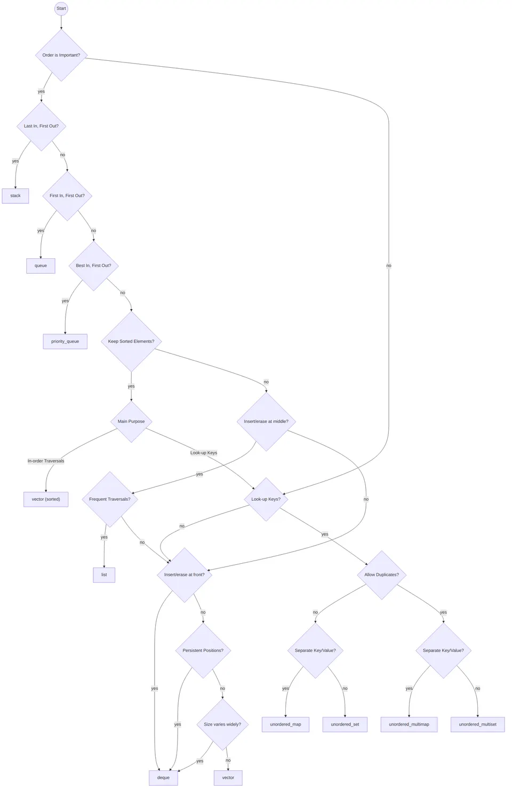

In computer science, a collection (often interchangeably referred to as a container) is a data structure that holds multiple values. These may be simple elements like numbers or text strings, or more complex objects like user-defined structures. Collections help you store, organize, and manipulate different types of data in your programs.
Choose a collection by listing the operations the program needs: lookup, insertion, deletion, iteration, ordering, and uniqueness. The right choice simplifies those operations and makes their performance costs predictable.
The abstract interface defines behavior, such as ordering and uniqueness. The implementation determines costs such as memory allocation, copying, pointer traversal, and cache misses. Consider both when comparing containers.
Every developer should really get to know collections well. It helps you pick the right type of collection for the job, making your code faster, more efficient, and easier to manage in the long run.

The interfaces below describe conceptual operations; exact method names and return values vary by implementation. Complexity tables assume constant-time element comparisons, moves, and hashing unless otherwise stated. Here, $n$ is the number of stored elements.
A Linked List is a basic way to organize data where you have a chain of nodes. Each node contains two distinct parts:
Importantly, the last node in the linked list points to a null value, effectively signifying the end of the list.
Linked lists are a great example of how “abstract vs machine level” matters. Abstractly, a list is just an ordered sequence. But machine-wise, an array and a linked list behave totally differently. A linked list trades away fast random access in exchange for flexibility in growing and shrinking without needing a big contiguous block of memory.
Linked lists can be highly valuable when the data doesn't require contiguous storage in memory or when the exact size of the data is undetermined at the time of memory allocation. While they can serve as an alternative to arrays, it's essential to note that linked lists generally have slower access times and are more challenging to manipulate due to their non-contiguous storage and absence of direct access to individual elements.
A quick “do/don’t” intuition that helps:
list[i] style access, because every index lookup becomes a walk.[HEAD]-->[1| ]-->[2| ]-->[3| ]-->[4| ]-->[NULL]Here are some standard operations associated with linked lists:
is_empty(): This checks if the list is devoid of any elements.front(): This retrieves the first element in the list.append(element): This adds a new element to the end of the list.remove(index): This removes an element at a specified index.replace(index, data): This substitutes the element at a specified index with a new value.| Operation | Average case | Worst case |
|---|---|---|
| Access | O(n) |
O(n) |
| Insert | O(1) |
O(1) |
| Delete | O(1) |
O(1) |
| Search | O(n) |
O(n) |
The insertion and deletion rows assume the required links are already known. In a singly linked list, deleting an arbitrary node generally requires its predecessor; having only the node reference is insufficient. Appending is $O(1)$ with a tail pointer and $O(n)$ without one. Index-based removal and replacement require traversal.
One detail that’s easy to miss: linked-list insert/delete being O(1) is only true when you’re inserting/deleting at a spot you can reach in O(1), like the head, or a node reference you already hold. If you’re deleting “the element at index 500,” you still have to walk to index 500 first, which is O(n). So the real takeaway is: linked lists are great at local edits, not great at random access.
Linked lists find utility in a wide variety of areas including, but not limited to:
Linked lists can be implemented in various ways, largely dependent on the programming language used. A conventional implementation strategy involves defining a custom class or structure to represent a node. This class encapsulates a value and a reference to the next node. Additionally, methods for adding, removing, and accessing elements are provided to manipulate the list.
In some languages, linked lists are provided as part of the standard library, abstracting away the underlying implementation details and providing a rich set of functionality.
In computer science, a vector can be thought of as a dynamic array with the ability to adjust its size as required. While similar to traditional arrays, vectors distinguish themselves with their superior flexibility and efficiency in numerous scenarios. They store elements in contiguous blocks of memory, ensuring swift access to elements through index-based referencing.
Vectors are often the “default best friend” in many programs because they play nicely with the hardware. Contiguous memory means the CPU cache can help you, iteration is fast, and indexing is instant. You get the simplicity of an array without the pain of manually resizing it.
Vectors are often favored over low-level arrays due to their augmented feature set and integrated safety mechanisms. These characteristics contribute to their easier usability and overall reliability.
-------------------------
| 0 | 1 | 2 | 3 | 4 | 5 |
-------------------------Some of the commonly used operations for vectors are:
sort(start, end): This function sorts the elements in the specified range within the vector.reverse(start, end): This operation reverses the order of elements between specified positions.size(): This function retrieves the current number of elements in the vector.capacity(): This retrieves the maximum number of elements the vector can hold before needing to resize.resize(new_size): This operation alters the vector size, adding or removing elements as necessary.reserve(new_capacity): This increases the vector capacity, if required, without changing the vector size.| Operation | Cost | Worst case per operation |
|---|---|---|
| Access by index | O(1) |
O(1) |
| Append | Amortized O(1) |
O(n) |
| Remove last | O(1) without shrinking |
O(1) without shrinking |
| Insert or delete at an arbitrary position | O(n) |
O(n) |
| Search unsorted values | O(n) |
O(n) |
Appending is amortized $O(1)$ when capacity grows geometrically: although an individual reallocation copies $O(n)$ elements, a sequence of $n$ appends takes $O(n)$ total work. Amortized analysis concerns a sequence of operations and does not assume random inputs. Removing the last element is constant time unless the implementation shrinks its buffer. Inserting or deleting in the middle shifts the remaining elements.
Appending to a vector is usually cheap, while insertion at the front shifts every existing element. Reallocation may move the whole buffer. If the approximate final size is known, reserving capacity can avoid repeated reallocations without changing the current size.
Vectors can be leveraged for a wide array of tasks, such as:
Vectors are typically implemented using an array of elements accompanied by additional metadata such as the current size and total capacity. When a resize operation is necessary, a new, larger array is created, and the existing elements are copied over to the new array. As resizing can be time and resource-consuming, vectors often allocate extra memory ahead of time to minimize the frequency of resizing.
In some programming languages or libraries, containers may be described as vector-like even if they are internally implemented using other data structures, such as linked lists; however, regardless of such claims, a true vector (or dynamic array) is fundamentally defined by its contiguous memory storage, which ensures efficient random access and predictable time complexity for indexing operations. While alternative implementations might present a similar interface to the programmer, they cannot fully replicate the behavior or performance characteristics of a standard vector, especially for indexing, because using non-contiguous structures like linked lists inherently changes how these operations work.
A stack is a fundamental data structure that models a First-In-Last-Out (FILO) or Last-In-First-Out (LIFO) strategy. In essence, the most recently added element (the top of the stack) is the first one to be removed. This data structure is widely utilized across various programming languages to execute a range of operations, such as arithmetic computations, character printing, and more.
Stacks feel almost too simple, until you realize how often your brain already uses them. “Undo” in an editor? Stack. Nested function calls? Stack. Matching parentheses? Stack. Any time the most recent thing needs to be handled first, a stack fits naturally and keeps your logic clean.
[5] <- top
[4]
[3]
[2]
[1] <- bottomTypical operations associated with a stack include:
push(element): This method places a new element on top of the stack, effectively becoming the most recent addition.pop(): This method returns the top element of the stack and simultaneously removes it.top(): This method simply returns the top element without removing it from the stack, allowing you to inspect the most recent addition.is_empty(): This method checks if the stack is empty, a useful operation before attempting to pop() or top() to prevent errors.| Operation | Average case | Worst case |
|---|---|---|
| Access | O(n) |
O(n) |
| Insert (Push) | O(1) |
O(1) |
| Delete (Pop) | O(1) |
O(1) |
| Search | O(n) |
O(n) |
Peeking at the top is $O(1)$. The access row refers to reaching an arbitrary deeper element, which a stack interface does not normally expose. Push and pop are worst-case $O(1)$ for a linked stack; for a dynamic-array stack, push is amortized $O(1)$ and can take $O(n)$ when the buffer grows.
A quick intuition: stacks aren’t meant for “random access.” If you find yourself wanting “the 7th element from the top,” you’re fighting the data structure. The win is that they make a certain workflow effortless: add to top, remove from top, repeat.
Stacks are incredibly versatile and are used in a multitude of applications, including:
Stacks can be implemented using various underlying data structures, but arrays and linked lists are among the most common due to their inherent characteristics which nicely complement the operations and needs of a stack.
The choice between arrays and linked lists often depends on the specific requirements of the application, such as memory usage and the cost of operations. With an array, resizing can be expensive but access is faster, while with a linked list, insertion and deletion are faster but more memory is used due to the extra storage of pointers.
A queue is a fundamental data structure that stores elements in a sequence, with modifications made by adding elements to the end (enqueuing) and removing them from the front (dequeuing). The queue follows a First In First Out (FIFO) strategy, implying that the oldest elements are processed first.
Queues are what you reach for when “fairness” or “arrival order” matters. They show up everywhere you need to process tasks in the order they came in: requests, jobs, events, messages. If stacks are great for backtracking and nested logic, queues are great for pipelines and scheduling.
[1] <- front
[2]
[3]
[4]
[5] <- rearThe standard operations associated with a queue are:
enqueue(element): This method adds a new element to the end of the queue.dequeue(): This method returns the front element of the queue and simultaneously removes it.front(): This method simply returns the front element without removing it from the queue, giving a peek at the next item to be dequeued.is_empty(): This method checks if the queue is empty, an important step before calling dequeue() or front() to prevent errors.While stacks and queues are similar data structures, they differ in several aspects:
A nice way to make this stick: stacks are “latest-first,” queues are “earliest-first.” When you pick one, you’re picking the story your data will follow.
| Operation | Average case | Worst case |
|---|---|---|
| Access | O(n) |
O(n) |
| Insert (Enqueue) | O(1) |
O(1) |
| Delete (Dequeue) | O(1) |
O(1) |
| Search | O(n) |
O(n) |
Peeking at the front is $O(1)$; the access row refers to an arbitrary interior element. Enqueue and dequeue are $O(1)$ with a linked queue that maintains both head and tail pointers, or with a fixed-capacity circular buffer. A growing circular buffer gives amortized $O(1)$ enqueue. Removing index zero from an ordinary dynamic array shifts elements and takes $O(n)$.
Queues are incredibly versatile and find use in a variety of real-world scenarios, including:
Queues can be implemented using various underlying data structures, including arrays, linked lists, circular buffers, and dynamic arrays. The choice of implementation depends on the specific requirements of the application, such as memory usage, the cost of operations, and whether the size of the queue changes frequently.
A heap is a specialized tree-based data structure that satisfies the heap property. There are two main types of heaps: max-heaps and min-heaps.
The binary heaps discussed here are complete binary trees, which means they are filled at all levels, except the last, which is filled from left to right. This structure ensures that the heap remains balanced.
Heaps are what you use when you don’t just want “the next item,” you want “the most important next item.” That’s the whole personality of a heap: it’s built to make the minimum or maximum easy to grab repeatedly, even while new things keep arriving.
[100]
├── [19]
│ ├── [17]
│ └── [3]
└── [36]
├── [25]
└── [1]The basic operations of a heap are as follows:
insert(value): Adds a new element to the heap while ensuring that the heap property is preserved.search(value): Searches for a specific value in the heap. Note that heaps do not allow efficient arbitrary searches.remove(value): Deletes a specific value from the heap, then restructures the heap to maintain its properties.In practice, heaps shine most when you remove min/max, not arbitrary values. That’s why many heap APIs focus on push / pop (or insert / extract_min). Arbitrary remove(value) can exist, but it’s usually not the main event and often needs extra bookkeeping to be efficient.
| Operation | Average case |
|---|---|
| Find min/max | O(1) |
| Delete min/max | O(log n) |
| Insert | O(log n) |
| Merge | O(m log(m+n)) |
The table describes a binary heap. Root lookup, insertion, and root removal have these worst-case heap-operation bounds, excluding buffer reallocation. Merging by inserting all $m$ elements into an $n$-element heap takes $O(m\log(m+n))$; concatenating the arrays and applying bottom-up heap construction takes $O(m+n)$. Arbitrary-value search takes $O(n)$, while removing a known index takes $O(\log n)$ after restoring heap order.
These time complexities make heaps especially useful in situations where we need to repeatedly remove the minimum (or maximum) element.
Heaps are versatile and find widespread use across various computational problems:
Heaps can be represented efficiently using a one-dimensional array, which allows for easy calculation of the parent, left, and right child positions. The standard mapping from the heap to this array representation is as follows:
1 of the array representation.i is positioned at index 2*i in the array.i can be found at index 2*i + 1.i, calculate the index as floor(i/2).This layout keeps the parent-child relationships consistent and makes navigation within the heap straightforward and efficient.
One small real-world note: many implementations store the root at index 0 instead of 1. The children of index i are then 2*i + 1 and 2*i + 2, and the parent of a non-root node is floor((i-1)/2). The core idea stays the same: the array layout is what makes heaps fast and compact.
A Binary Search Tree (BST) is a type of binary tree where each node has up to two children and maintains a specific ordering property among its values. For every node, the values of all nodes in its left subtree are less than its own value, and the values of all nodes in its right subtree are greater than its own value. In a well-balanced BST, this property enables efficient lookup, addition, and deletion operations, ideally distributing the nodes evenly across the left and right subtrees. This presentation assumes distinct keys. A BST can support duplicates by storing a count or a collection of values per key, provided insertion, lookup, and deletion use the same policy.
BSTs are the “ordered dictionary” idea in tree form. You get structure (everything left is smaller, everything right is bigger), which means you can search by repeatedly eliminating half the remaining options, if the tree stays balanced. That “if” is why the next sections (AVL and Red-Black trees) exist.
#
[4]
/ \
[2] [5]
/ \ \
[1] [3] [6]The fundamental operations provided by a BST are:
insert(value): Inserts a new value into the tree, maintaining the BST property.search(value): Searches for a specific value in the tree. If the value exists, the operation returns the node. If not, it typically returns null.remove(value): Deletes a value from the tree, preserving the BST property. If the node to be removed has two children, it's replaced with its in-order predecessor or successor.minimum(): Retrieves the smallest value in the tree, which is the leftmost node.maximum(): Retrieves the largest value in the tree, which is the rightmost node.The efficiency of BST operations depends on the height of the tree. Each search, insertion, or deletion takes $O(h)$ for height $h$. A balanced tree guarantees $h=O(\log n)$; the average-case column for an ordinary BST assumes a suitable distribution, such as random insertion order. However, in the worst-case scenario (a degenerate or unbalanced tree), the time complexity degrades to O(n).
| Operation | Average case | Worst case |
|---|---|---|
| Access | O(log n) |
O(n) |
| Insert | O(log n) |
O(n) |
| Delete | O(log n) |
O(n) |
| Search | O(log n) |
O(n) |
This is the big caution label on plain BSTs: if you insert sorted data into a basic BST, it can collapse into a linked list shape, and you lose the whole point. Balanced variants exist because real data isn’t always friendly.
A BST is typically implemented using a node-based model where each node encapsulates a value and pointers to the left and right child nodes. A special root pointer points to the first node, if any.
Insertion, deletion, and search operations are often implemented recursively to traverse the tree starting from the root, making comparisons at each node to guide the direction of traversal (left or right). This design pattern exploits the recursive nature of the tree structure and results in clean, comprehensible code.
Named after its inventors, G.M. Adelson-Velsky and E.M. Landis, AVL trees are a subtype of binary search trees (BSTs) that self-balance. Unlike regular BSTs, AVL trees maintain a stringent balance by ensuring the height difference between the left and right subtrees of any node is at most one. This tight control on balance guarantees optimal performance for lookups, insertions, and deletions, making AVL trees highly efficient.
AVL trees are what you use when you want BST behavior without the “it might turn into a stick” risk. They pay a little extra work during updates (inserts/deletes) to keep the tree shaped nicely. The payoff is predictability: searches stay reliably fast.
#
[20]
/ \
[10] [30]
/ \ / \
[5] [15] [25] [35]The defining characteristics of AVL trees include:
AVL trees support standard BST operations with some modifications to maintain balance:
insert(value): Add a value to the tree while preserving the AVL properties.search(value): Find and return a node with the given value in the tree.remove(value): Delete a node with the given value while keeping the tree balanced.rotate_left(), rotate_right(): Perform rotation operations to balance the tree after insertions or deletions.| Operation | Average | Worst |
|---|---|---|
| Access | O(log n) |
O(log n) |
| Insert | O(log n) |
O(log n) |
| Delete | O(log n) |
O(log n) |
| Search | O(log n) |
O(log n) |
The AVL tree's self-balancing property lends itself to various applications, such as:
An AVL node needs rebalancing when the height difference reaches two, not merely when one subtree is taller. Rotations preserve the in-order sequence of keys. Choose a single rotation for an outside-heavy child, or a double rotation for an inside-heavy child; after deletion, a child with equal subtree heights uses a single rotation. Four types of rotations can occur based on the tree's balance state:
These rotations keep AVL trees balanced, ensuring consistent performance.
Red-Black trees are a type of self-balancing binary search trees, with each node bearing an additional attribute: color. Each node in a Red-Black tree is colored either red or black, and these color attributes follow specific rules to maintain the tree's balance. This balance ensures that fundamental tree operations such as insertions, deletions, and searches remain efficient.
If AVL trees are “strict about balance,” Red-Black trees are “relaxed but practical.” They allow a bit more imbalance than AVL trees, but in return they often do fewer rotations during updates. That’s why you see them a lot in standard libraries: they’re a great all-around choice for ordered maps/sets.
#
(30B)
/ \
(20R) (40R)
/ \ / \
(10B) (25B) (35B) (50B)Red-Black trees abide by the following essential properties:
Red-Black trees support typical BST operations, albeit with additional steps to manage node colors and balance:
insert(value): Add a value to the tree, managing colors and rotations to maintain balance.search(value): Find and return a node with the given value in the tree.remove(value): Delete a node with the given value, adjusting colors and performing rotations as necessary to keep the tree balanced.rotate_left(), rotate_right(): Perform rotation operations to maintain balance after insertions or deletions.| Operation | Average | Worst |
|---|---|---|
| Access | O(log n) |
O(log n) |
| Insert | O(log n) |
O(log n) |
| Delete | O(log n) |
O(log n) |
| Search | O(log n) |
O(log n) |
Red-Black trees find application in several areas, including:
Red-Black trees are a sophisticated binary search tree variant. They require careful management of node colors during insertions and deletions, often involving multiple rebalancing steps:
These careful rotations and recoloring steps enable Red-Black trees to maintain balance and ensure efficient performance across various operations.
Hash tables, often referred to as hash maps or dictionaries, are a type of data structure that employs a hash function to pair keys with their corresponding values. This mechanism enables efficient insertion, deletion, and lookup of items within a collection, making hash tables a fundamental tool in many computing scenarios. They are often used in contexts where fast lookup and insertion operations are important, such as database management and networking applications.
Hash tables organize entries for lookup by key. A name-to-phone-number map is a typical example. Hashing does not itself provide sorted order, and performance depends on how evenly keys are distributed and how collisions are handled.
+-----------------+
| Key | Value |
|-----|-----------|
| K1 | V1 |
| K2 | V2 |
| K3 | V3 |
| K4 | V4 |
| ... | ... |
+-----------------+Hash tables support a range of operations, which include:
is_empty(): This method checks if the hash table is empty and returns True if so, or False otherwise.insert(key, value): This method adds a new key-value pair to the hash table.retrieve(key): This function fetches the value associated with a specified key.update(key, value): This operation modifies the value associated with a given key.delete(key): This function removes the key-value pair corresponding to the provided key from the hash table.traverse(): This method allows iteration over all the key-value pairs in the hash table.Expected constant-time lookup assumes bounded load, suitable hash distribution, and constant-time key hashing and comparison. Insertion is also amortized over occasional resizing; hashing a previously unhashed string of length $L$ can itself cost $O(L)$.
The performance of hash table operations depends on the hash function's quality, the strategy for resolving collisions, and the load factor (the ratio of the number of key-value pairs to the number of slots or buckets in the table).
| Operation | Average case | Worst case |
|---|---|---|
| Access | - |
- |
| Insert | O(1) |
O(n) |
| Delete | O(1) |
O(n) |
| Search | O(1) |
O(n) |
Expected constant-time lookup explains the usefulness of hash tables. Poor hash distribution or an overloaded table can lengthen searches substantially, so implementations manage their load factor and resize when needed.
Hash tables are ubiquitous across various domains, including:
The creation of a hash table involves setting up a data structure to store key-value pairs, designing a hash function to map keys to slots in the data structure, and devising a collision resolution strategy to handle instances where multiple keys hash to the same slot.
Common data structures used include arrays (for open addressing) and linked lists or balanced trees (for separate chaining).
A hash function takes a key (like a string) and turns it into a number, which then decides where to store the data in a table. The goal is to spread out the keys evenly so that no single spot gets overloaded. Adding character codes and reducing modulo the table size is a simple teaching example, but it gives all anagrams the same hash and distributes many inputs poorly. A practical string hash must account for character order. Prime moduli can help particular constructions, but cannot repair a fundamentally poor hash function.
One correction for accuracy: the hash function should depend on the key, not on the number of keys. A typical sketch is:
# x: key
# m: number of buckets
h(x) = hash(x) % mThat’s the whole game: turn the key into a hash code, then map it into the table range.
Collisions occur when two or more keys hash to the same slot. There are two common strategies to handle these collisions: chaining and open addressing.
Collisions are not a rare edge case, they’re expected. A good hash table design doesn’t try to “avoid collisions completely,” it tries to make collisions cheap to deal with. That’s why understanding the collision strategy matters: it tells you what “worst case” looks like in practice.
With chaining, each slot or bucket in the hash table acts as a linked list. Each new key-value pair is appended to its designated list. While this approach allows for efficient insertions and deletions, the worst-case time complexity for lookups escalates to O(n), where n is the number of keys stored.
The following is an example:
index Bucket
---------------------
0 -> ["apple"]
1 -> ["banana", "mango"]
2 -> ["cherry"]
3 -> []
4 -> ["dates", "elderberry", "fig"]
...In the above example, "banana" and "mango" hash to the same index (1), so they are stored in the same linked list.
In open addressing, the hash table is an array, and each key-value pair is stored directly in an array slot. When a collision arises, the hash table searches for the next available slot according to a predefined probe sequence. Common probing techniques include linear probing, where the table checks each slot one by one, and quadratic probing, which checks slots based on a quadratic function of the distance from the original hash.
Here's an example using linear probing:
index Bucket
---------------------
0 -> "apple"
1 -> "cherry"
2 -> "banana" (originally hashed to 1, moved due to collision)
3 -> "mango" (originally hashed to 1, moved due to collision)
4 -> "dates"
5 -> "elderberry"
6 -> "fig"
...In this case, "banana" and "mango" were hashed to index 1, but since it was already occupied by "cherry", they were moved to the next available slots (2 and 3, respectively).
Deleting an open-addressed entry must preserve its probe chain, for example with a tombstone or backward-shift deletion. Turning an occupied slot directly into a never-used empty slot can make later keys unreachable.
Practical considerations:
Rely on iteration order only if the implementation documents it. Some hash tables preserve insertion order, but hashing alone does not provide sorted order.